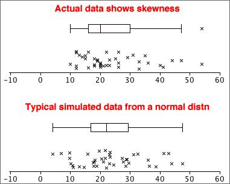

Interpreting a graphical summary of a sample
Simulations can also help us to assess features such as outliers, clusters or skewness in a data set by examining how often they appear in random samples from a population without such features.
In particular, we can examine variability in samples from a normal distribution that closely matches the shape of the data set.

The amount of skewness in the the actual data (top) is rarely seen in simulated normal samples (such as that shown above). This informally suggests that the the population underlying the data really is skew and not symmetric.